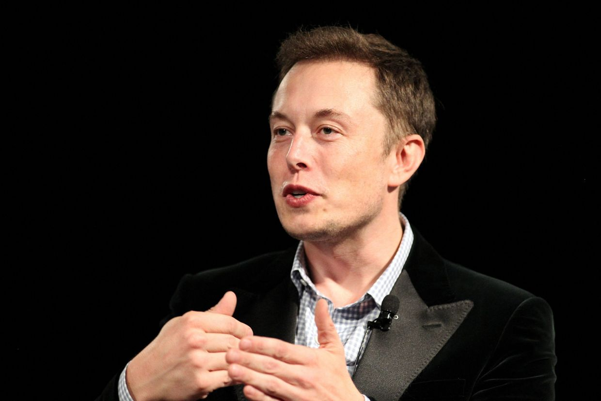

Elon Musk

The man behind the future
- 1971 Born in Pretoria, South Africa
- 1989 Elon Musk went to Queen's University in Kingston, Ontario, Canada, and then transferred to the University of Pennsylvania in Philadelphia, where he received bachelor's degrees in physics and economics in 1997
- 12 January 1991Blastar was a game written by Elon Musk in 1984 (at the age of 12). The source code was published in a magazine and he received $500 for it.
- 16 August 1995In 1995 Elon Musk received his Bachelor in Physics and Economics from the University of Pennsylvania.
- 5 September 1995 Moved to California
- 1 November 1995 Elon Musk was accepted into Queen's University.
- 16 February 1999 With US$28,000 money borrowed from Musk's father, Musk, his brother Kimbal, and Greg Kouri started online software startup Zip2 in 1995. They set up shop in Palo Alto in a small rented office. For the newspaper publishing sector, the company created and sold an Internet city guide including maps, directions, and yellow pages. Musk claims that he couldn't afford an apartment before the company became popular, so he rented an office, slept on the couch, showered at the YMCA, and shared one computer with his brother.
- 14 March 2000 Musk co-founded X.com, an online financial services and e-mail payment company, with US$10 million from the sale of Zip2. The company was one of the first federally insured internet banks, with over 200,000 customers in its first months of existence. Musk's investors viewed him as inexperienced, and before the end of the year, he had been replaced by Bill Harris, the CEO of Intuit. To minimize competition, X.com merged with online bank Confinity the following year. Confinity, which was founded by Max Levchin and Peter Thiel, had its own money-transfer service, PayPal, which was more popular than X.com's.
- 17 May 2000 Elon marries Justine in 2000 but separated in 2008, after having six sons.
- 2 October 2000PayPal was acquired by eBay for US$1.5 billion in stock, of which US$165 million was given to Musk.
Here's a timeline of Elon Musk:
“When something is important enough, you do it even if the odds are not in your favor.”-Elon Musk